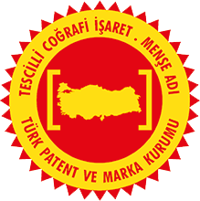

Lisans ve tescil
Finike Adının Arkasındaki Güvence
"Finike Portakalı" herkesin kullanabileceği bir etiket değil, coğrafi işaret tescilli bir üründür. Bu sayfada tescilin ne anlama geldiğini, kooperatif logosunun nasıl kullanılabileceğini ve sitemizin yasal metinlerini bulabilirsiniz.
Finike Portakalı Coğrafi İşaret Tescili

| Coğrafi işaret | Finike Portakalı |
|---|---|
| Coğrafi işaret türü | Menşe adı |
| Tescil no | 106 |
| Tescil ettiren | S.S. Finike Tarımsal Kalkınma Kooperatifi |
| Koruma başlangıcı | 26.04.2006 |
| İlan | 15.05.2008 tarihli, 26877 sayılı Resmî Gazete |
| Değişiklik ilanı | 01.09.2026 tarihli, 228 sayılı Bülten |
| Ürün ve çeşit | Portakal, Washington Navel |
| Kullanım biçimi | Markalama |
| Coğrafi sınır | Antalya ili Finike ilçesi; Turunçova, Hasyurt, Yeşilyurt ve Sahilkent beldeleri ile Yalnız ve Yuvalılar köyleri yerleşim alanı |
| Denetim | Finike Meyve Üreticileri Birliği koordinasyonunda, en az üç kişilik komisyonlarca yılda iki kez ve şikâyet hâlinde her zaman |
Menşe adı, ürünün niteliğinin doğrudan yetiştiği coğrafyadan kaynaklandığını kabul eder. Bu nedenle "Finike Portakalı" adı yalnızca tescil belgesinde tanımlanan coğrafi sınırlar içinde yetiştirilen ve belgedeki teknik özellikleri karşılayan portakallar için kullanılabilir. Üretim, işleme ve diğer işlemlerin tamamı bu alan içinde yapılmalıdır.
Tescil belgesine göre ayırt edici özellik bu coğrafyadan gelir: kuzeyde Akdağ, batıda Gülmez Dağı ve Akçay ile Alakır deresinin yıllar içinde taşıdığı alüvyonlu toprak. Finike'den alınıp başka bölgelere dikilen fidanlar aynı rengi, kaliteyi ve aromayı vermez.
Belgedeki Teknik Özellikler
| Ortalama meyve ağırlığı | 237,69 g |
|---|---|
| Boy × en | 78,36 × 77,53 mm |
| Kabuk kalınlığı | 5,26 mm |
| Dilim sayısı | 10,25 (ortalama) |
| Çekirdek sayısı | 0 |
| Kuru madde | %12,4 |
| Usare (meyve suyu) oranı | %45–55 |
| Briks | 12,80 |
| İnvert şeker | %6,45 |
| Asit | %0,5–0,9 |
| Hasat ve en elverişli dönem | Kasım'da hasat başlar; Aralık, Ocak ve Şubat |
Başka bölgede yetişen portakalın "Finike" adıyla satılması 6769 sayılı Sınai Mülkiyet Kanunu kapsamında bir ihlaldir. Böyle bir satışla karşılaşırsanız fotoğraf ve satış yeri bilgisiyle bize bildirin.
TÜRKPATENT coğrafi işaret sorgulama · Coğrafi İşaret Portalı
Kooperatif Marka ve Logo Kullanım Lisansı
"S.S. Finike Tarımsal Kalkınma Kooperatifi" adı ve logosu kooperatife aittir. Aşağıdaki durumlarda yazılı onay almadan kullanılabilir:
- Kooperatiften satın alınan ürünlerin satışında, ürünün kaynağını belirtmek için (ör. manav rafında "S.S. Finike Tarımsal Kalkınma Kooperatifi'nden").
- Haber, akademik çalışma ve tanıtım yazılarında, logonun oranları ve renkleri değiştirilmeden.
Kooperatiften alınmamış ürünlerde, ambalaj tasarımında veya ortaklık izlenimi verecek reklamlarda kullanım için lisans talebi gönderin. Lisanslı iş ortaklarına logo dosyaları ve kullanım kılavuzu ayrıca iletilir.
Site İçerik Lisansı
Tarifler sayfasındaki metinler CC BY-NC 4.0 lisansıyla paylaşılır: kaynak göstererek ve ticari amaç gütmeden kopyalayabilir, uyarlayabilirsiniz. Fotoğraflar, videolar ve diğer tüm içerik için hakları saklıdır; kullanım için izin isteyin.
Fotoğraf Künyeleri
Sitedeki fotoğraflar kooperatifin kendi fotoğrafları gelene kadar kullanılan geçici görsellerdir ve kooperatifin bahçelerini ya da ürünlerini göstermez. Wikimedia Commons'tan alınmıştır ve her biri kendi lisansına tabidir; yukarıdaki "hakları saklıdır" ifadesi bu fotoğraflar için geçerli değildir. Boyutları küçültülmüş, kırpılarak gösterilmektedir.
- Dalında portakallar: Bitter orange - Citrus × aurantium 03.jpg, Zeynel Cebeci, CC BY-SA 4.0
- Portakal kesiti: Orange - IMG 0418 (5443175186).jpg, N i c o l a from Fiumicino (Rome), Italy, CC BY 2.0
- Finike limanı: Port de Finike.JPG, Masterdeis, CC BY-SA 3.0
- Beydiğin'den Akdağ: Beydiğin 14 04 2015 Akdağ 1.jpg, Volker Höhfeld, CC BY-SA 4.0
- Kasada portakal: Oranges basket.jpg, Usamasaad, CC BY-SA 4.0
- Kesilmiş portakallar: Ambersweet oranges.jpg, Yazar belirtilmemiş, Public domain
- Taze sıkma portakal suyu: Glass of Fresh Orange Juice.jpg, Rebeloasisx, CC BY-SA 4.0
- Bütün ve yarım portakal: Oranges - whole-halved-segment.jpg, Ivar Leidus, CC BY-SA 4.0
- Reçel kavanozları: Finished marmalades (8449071267).jpg, Leslie Seaton from Seattle, WA, USA, CC BY 2.0
- Kurutulmuş portakal dilimleri: Zhejiang Jiaxing dried orange slices.jpg, Fumikas Sagisavas, CC0
- Arykanda antik kenti: Arykanda Grand Bath and Graves area 3885.jpg, Dosseman, CC BY-SA 4.0
Mesafeli Satış ve İade
Siparişler 6502 sayılı Tüketicinin Korunması Hakkında Kanun ve Mesafeli Sözleşmeler Yönetmeliği'ne tabidir. Taze meyve gibi çabuk bozulabilen ürünlerde cayma hakkı kullanılamaz.
- Hasarlı veya bozuk teslim edilen ürünleri teslimattan sonraki 48 saat içinde fotoğrafla bildirin.
- Bildirim onaylandığında ürün yeniden gönderilir veya bedeli ödeme yönteminize iade edilir.
- Reçel ve kurutulmuş ürünlerde ambalajı açılmamışsa 14 gün içinde cayma hakkı geçerlidir.
Tam sözleşme metni ödeme adımında gösterilir.